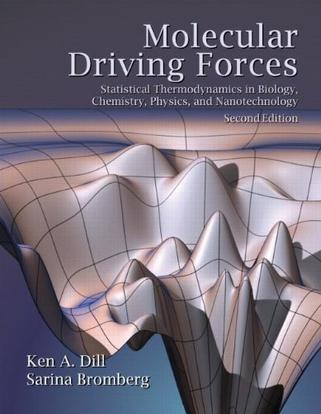

Gromacs+GAFF力场计算有机分子组装 (友情赞助, 不断更新)
Gromacs GAFF (Amber tool, GPL)
看起来很有帮助的详细教程:
Jerkwin
使用AmberTools+ACPYPE+Gaussian创建小分子GAFF力场的拓扑文件
文中有链接提供AmberTools+ACPYPE下载.
wl changelog
-
2018/01/01 20180101的代码中, 优化了mc updates fraction, 删去不必要的mc update, 结果提升了采样效率(相同mcstep, energy traj变动更剧烈), 并且相比之前, 整个程序的收敛时间缩短了.
counr_num_tgt的初始化也改正了:
bak.free-semiflexible-hardsphere.20180101.tar.gz
bak.zaxisfree-semiflexible-hardsphere.20180101.tar.gz -
之前几乎所有的代码中, count_num_tgt(i)的初始化都有bug, 此数组0:level_2nd, 初始化时却1:chainlength
之前并未暴露此bug, 因为只在prod时计算count_num_tgt, 虽然count_num_tgt初始化有bug, 但在声明count_num_tgt时即已初始化, 并且之前prod都只是跑一次迭代(iter.24), 所以此bug未暴露, 结果也未受影响. -
代码2017-12-15 v6之前的代码, 凡是包含array_xyz_in_wall(涉及到system under confinement体系的代码), 都需要修正初始化bug …
我的书单(持续更新)
-
KA Dill 2011 2ed molecular driving forces
KA_Dill_2011_2ed_molecular-driving-forces.pdf (2018/11/18: 终于下载到了电子版, 开心! 可以直接在电子版上做笔记, 截图)
 -
z.cn上, KA Dill的书, DJ Wales的书都有kindle电子版出售.
(DJ Wales的书或许未来可在bookzz下载)
京东上有家 澜瑞外文, Doi的soft matter phys比亚马逊上便宜, 600多RMB, 或者我拿着电子版去打印, 书本身不厚.
另外, 最新出版的 The theory of complex systems 在这家店也能买到, 900多RMB, 而amazon.com上60美元, 还是比京东上便宜很多. 可能京东购买或者找代购或者再等等?
de Gennes的书已经有电子版. 纸版书很厚, 如果要看可以图书馆借阅.
A …
AlphaGo related things
open-sourcing DeepMind Lab DeepMind Lab is a fully 3D game-like platform tailored for agent-based AI research. ('agent-based' -> Netlogo?)
TensorFlow, Sonnet(TensorFlow-based neural network library) Sonnet Github page
DeepMind Github page (including several different repos)
DeepMind目前使用TensorFlow. 查找发现最近又有个PyTorch(说是更pythonic的东西, 但不清楚是否好用 …
read morePhysics meets machine learning
最近AlphaGo与柯洁的对战又火了, youtube DeepMind视频地址: 柯洁对阵 AlphaGo：第三局 直播
知乎上关于物理与机器学习的专栏: 当物理与机器学习相遇
这个网页整理了很多关于物理与机器学习的论文: https://physicsml.github.io/pages/papers.html
机器学习与物理的结合能走多远, 还不是很清楚. 上面的论文有一些发现, machine learning可以区分order和disorder的构型, 对此我觉得并不稀奇. 定义一些序参量, 可以捕捉到相变信号, 这是物理行当中一直在做的事. 可能想要捕捉一些复杂体系的转变, 序参量难以定义时, 可以考虑尝试机器学习.
看新闻报道里说, 围棋棋盘是L=19, 19x19个格点, 考虑每个格点有两种状态, 这样总状态数是2^(19x19), 非常大, 而机器学习可以通过一些算法在其中找出最优的构型. 对此我觉得也不稀奇. 考虑统计物理里Ising model, Q-state Potts model的研究, 体系尺寸都已经做到了比19x19大得多, 而且还要考虑围棋上没有的周期性边界条件. 这些更大的体系, 现在都有Wang-Landau sampling/Multicanonical …
read more计算模拟的软件包, 分析程序和常用库 (随手更新, 也是给自己的备忘)
记录自己感兴趣的计算软件工具和方法, 未来可能学习使用. 人尽皆知的就不在这里记录了.
read more分子模拟中一些基本参量和方法(基本原理和技术细节, 持续更新)
structure factor S(q) radial distribution function g(r) the relation between S(q) and g(r)
mean square displacement diffusion constant D
Umbrella Sampling
transition path sampling
read morePOV-Ray学习笔记
POV-Ray可以通过.pov建立对象并渲染, 最终输出图片.
通过POV-Ray, 可以批量处理, 渲染图片.
Youtube上有详细的POV-Ray入门教程, 可以一步一步地跟着敲代码调试.
POV-Ray网站上有一些精彩的示例.
可以通过.pov脚本建立非常复杂的场景并渲染.
又比如网上搜到的一个例子:

通过下面几行代码生成(命令行输入povray test.pov):
// Code
// render with +w500 +h500
global_settings{assumed_gamma 2.2}
#default{finish{ambient 1}}
camera{
orthographic
right x*2 up y*2
location -z*100 look_at 0
}
#declare native_motif=
pigment{
gradient y triangle_wave …